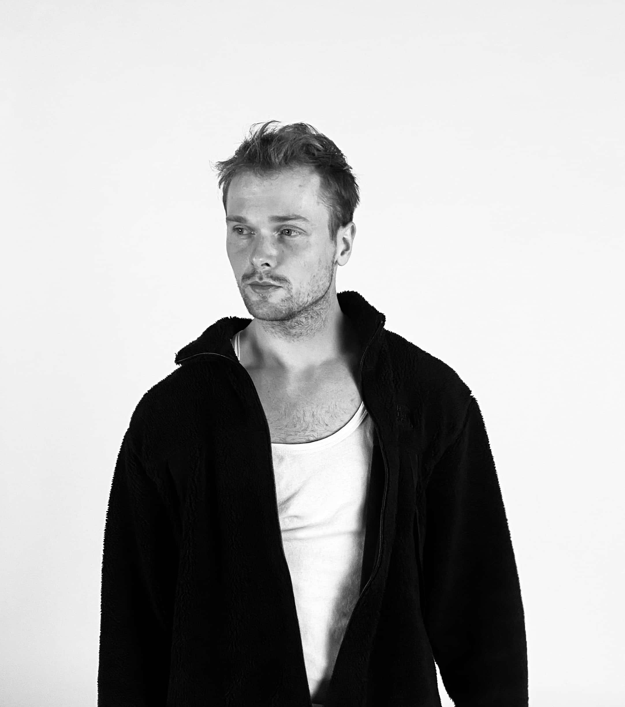

Hi, ich bin Thomas
Zimmermann, Theologiestudent, Designer und Datenvisualisierer. Ich bewege mich zwischen Handwerk und digitaler Gestaltung – überall dort, wo ästhetische Form entsteht, beginne ich zu denken und zu entwerfen. Daraus entsteht ein vielseitiges Portfolio aus konzeptionellen und künstlerischen Arbeiten. Mein gestalterisches Denken arbeitet mit Metaphern, Geschichten und abstrakten Bildern jenseits rein sprachlicher oder rationaler Zugänge. Ich übersetze komplexe Themen – oft aus Daten und Informationen – in sinnliche, nonverbale Formen, die erfahrbar und emotional zugänglich werden.
"Im Spannungsfeld zwischen Data Design und Art, Digital und Analog, bin ich zuhause"